Ask Early, Ask Late, Ask Right: When Does Clarification Timing Matter for Long-Horizon Agents?
问得早、问得晚、问得对：澄清时机何时对长程 Agent 重要？
简介
长程 Agent 在指令不完整时必须决定是否以及何时向用户提问澄清，但已有工作只把澄清当作"能不能问"的二元能力，从未量化澄清价值随执行进程的衰减规律。论文提出 forced-injection 框架，在 oracle 校准轨迹的 10%-90% 五个时点注入真值澄清，覆盖 goal/input/constraint/context 四个信息维度、三个基准（MCP-Atlas、TheAgentCompany、SWE-Bench Pro）与四个前沿模型，共 84 个任务变体、6,348 次运行；另以 300 个启用 ask_user 工具的 session 观察模型自然提问行为。关键结论：澄清价值强烈依赖缺失信息类型——goal 类在执行 10% 后价值几乎耗尽（pass@3 从 0.78 跌回基线 0.40），input 类可延续到约 50%，跨模型 Kendall τ（0.78-0.87）表明时序曲线主要由任务内在结构决定；且没有任何前沿模型在最优窗口内提问，从过度提问（52% session）到从不提问不等。这为团队设计 Agent 澄清策略与人在回路评测提供了可量化的设计目标。
问题
长程 Agent 执行数百步动作的工作流时，指令欠规范（underspecified）会导致早期错误假设级联为不可逆错误。Agent 面临"继续执行还是暂停提问"的决策，而已有工作（LHAW、HiL-Bench 等）只把澄清当作二元能力或优化置信度阈值，假设信息在轨迹任意时点价值相同，缺乏对澄清价值如何随时机变化的实证测量。论文量化"需求侧"问题：在轨迹各时点提供缺失信息能为任务表现带来多少收益，以及当前模型的自然提问行为与经验最优窗口的错位程度。
方法
核心是 forced-injection 框架：基于 oracle 校准的动作预算 B_m,v，在轨迹的 10%/30%/50%/70%/90% 处以合成用户消息注入真值澄清（注入期间禁用 ask_user 工具，以隔离纯时机效应、独立于模型识别歧义的能力），覆盖 goal/input/constraint/context 四个信息维度。任务变体取自 LHAW 的 84 个欠规范变体，横跨 MCP-Atlas（36 个，工具调用）、TheAgentCompany（30 个，企业工作流）、SWE-Bench Pro（18 个，代码修复）三个基准与四个前沿模型（GPT-5.2、Claude Sonnet 4.5、Gemini 3 Flash，DeepSeek V3.2 仅 MCP-Atlas）。指标包括 pass@3、wasted compute（注入前动作相对 oracle 轨迹的浪费比例）、point of no return（单侧置换检验）、跨模型 Kendall τ。理论上以 trajectory commitment 模型解释维度间衰减差异；辅以 natural-ask 协议（300 个启用 ask_user MCP 工具的 session）测量模型自然提问率与首次提问时机。
关键结果
MCP-Atlas 上 goal 澄清在轨迹 10% 注入即接近 oracle（pass@3 0.78 vs oracle 0.80、无澄清基线 0.40），Inj-30 降至 0.50，Inj-70 后（0.39）不再优于基线
input 澄清衰减平缓：Inj-10 为 0.46，至约 50% 仍高于基线，Inj-90（0.25）低于无澄清基线 0.33（oracle 0.57）
SWE-Bench Pro 上 constraint 注入从 Inj-10 的 0.81 衰减到 Inj-90 的 0.68，始终高于无澄清基线 0.56；强形式 H2（低于基线的干扰）未被两个基准支持
wasted compute 随注入延迟单调上升：TheAgentCompany 从 0.0%（Inj-10）升至 21.7%（Inj-90），MCP-Atlas 为 38.4%-52.9%，SWE-Bench Pro 为 0.7-10.4 个浪费动作
跨模型 Kendall τ：TheAgentCompany 上 0.78-0.87，四模型合并数据集 0.34-0.67（均 p<0.01），支持时机效应主要是任务内在的
自然提问研究（300 sessions）：GPT-5.2 提问率 52%、平均首次提问时机 43%；Claude Sonnet 4.5 为 23%、50%；Gemini 3 Flash 为 0%；无模型落在经验最优窗口内
仅 outcome-critical 变体在轨迹 30% 处出现统计显著的恢复点（p<0.05，Bonferroni 校正）；澄清收益是连续衰减而非阈值式
Claude 每 session 成功率 11% 高于 GPT-5.2 的 3%，尽管提问更晚更少，提示问题质量可能比频率更重要（作为假设而非受控结论）
实验总规模：84 个变体、三个基准、四个模型、6,348 次运行，API 成本约 $4,200
创新点
首个针对长程 Agent 澄清时机的实证 VOI（value-of-information）曲线。与已有工作的区别：(1) LHAW、HiL-Bench 等基准只测"能否提问"，不把时机作为自变量；(2) 置信度阈值类方法（selective clarification、ask-for-help 策略等）假设信息在任意轨迹点价值相同；(3) VOI 理论与 HCI 中断研究只做了理论预测而无 LLM Agent 的实证测量。本文用 forced-injection 把时机效应与模型识别歧义的能力解耦，并通过跨模型 Kendall τ 证明时序曲线主要由任务内在因果结构决定。
团队参考意义
相关度级别：high
命中能力域：3.3 Agent 架构与工具使用 | 3.5 评测与可靠使用
理由：直接命中两个能力域：3.5 方面，论文本身是一套 Agent 应用评测方法学（forced-injection 框架、pass@3/wasted compute/point of no return 指标体系、跨模型一致性检验），且研究的是人在回路（ask_user 澄清）工作流的实证规律，属于"AI 辅助工程的实证研究"与"人机协作工作流"；3.3 方面，论文测量单 Agent 在欠规范指令下的执行可靠性，给出可直接写入 harness 的设计准则（goal 类信息须在最初几步确认、input 类可延至前半程），并涉及 ask_user 工具定义与 MCP 工具调用基准（MCP-Atlas）。对构建工程自动化 Agent 的团队而言，"Agent 何时该问人"是 harness 设计与可靠性保障的核心问题，本文提供了此前缺失的量化依据。
建议动作：深入精读并做内部分享
中文全文
arXiv:2605.07937v1 [cs.CL] 2026年5月8日
Abstract
长时程 AI Agent 执行跨越数百个顺序动作的复杂工作流，然而早期的一个错误假设可能级联引发不可逆的错误。当指令不完整时，Agent 不仅要决定是否请求澄清，还必须决定何时请求，而此前尚无工作度量澄清的价值在执行过程中如何变化。我们提出一种强制注入框架，在 Agent 轨迹的受控时间点上提供真值澄清，涵盖四个信息维度（目标、输入、约束、上下文）、三个 Agent 基准测试（benchmark）以及四个前沿模型（每个基准测试三个模型；其中一个模型仅在单一基准测试上运行；84 个任务变体；6,000 余次运行）。与“越早越好”这一常见直觉相反，我们发现澄清的价值强烈取决于缺失的是何种信息：目标澄清在执行进度超过 10% 后几乎完全失去价值（pass@3 从 0.78 降至基线水平），而输入澄清的价值大约可保持至执行进度的 50%。将任何类型的澄清推迟到轨迹中点之后，都会使性能降至低于从不提问的水平。跨模型 Kendall τ 相关系数（在任务覆盖范围完全相同的模型之间为 0.78–0.87；在全部 4 个模型构成的面板中为 0.34–0.67）证实这些时机特征在很大程度上是任务固有的。一项针对 300 个非脚本化会话的补充研究显示，目前没有任何前沿模型会在经验最优窗口内提问，其策略从过度提问（占 52% 的会话）到从不提问不等。这些经验需求曲线为现有理论框架提供了其所需却一直缺失的定量基础，并为时机感知的澄清策略确立了具体的设计目标。代码和数据将公开发布。
1 Introduction
如今，长程 AI Agent 能够执行跨越代码修复、企业自动化和工具编排的复杂多步骤工作流，往往在极少人工监督的情况下完成数十到数百个顺序动作 [Yao et al., 2023, Xu et al., 2024, Jimenez et al., 2024, Bandi et al., 2026, Lumer et al., 2026a]。当用户指令不完整时，这些 Agent 面临一个根本性决策：是在不确定性下继续执行，还是暂停下来请求澄清。设想一个受命生成季度报告的企业 Agent：它花费 30 个动作构建了错误的表格，之后才意识到用户指的是财务季度而非日历季度。若在第二步提出一个澄清性问题，本可以完全避免这些被浪费的工作。这一决策的代价随轨迹长度增加而放大，因为在错误假设下每多执行一个动作，都会使不可逆错误和计算浪费的风险进一步叠加 [Lumer et al., 2026b]。
近期的基准测试（benchmark）表明，欠规约始终会降低 Agent 性能，而澄清渠道能够实现部分恢复 [Pu et al., 2026, Elfeki et al., 2026]；然而，现有工作将澄清视为一种二元能力：Agent 要么能够提问，要么不能提问。LHAW [Pu et al., 2026] 与 HiL-Bench [Elfeki et al., 2026] 均未涉及时间维度，不过 LHAW 的失效模式分析独立地将时机识别为一个问题，发现 Agent 会在轨迹中不恰当的时间点提问。经典信息价值理论 [Howard, 1966] 与人机交互（HCI）中断研究 [Adamczyk and Bailey, 2004, Mark et al., 2008] 都预测澄清的收益应随时机而变化，但对于现代大语言模型（LLM）Agent，尚不存在对这一交互作用的经验测量。提问过早会有这样的风险：所询问的信息本可以从尚未观察到的上下文中推断出来。提问过晚则意味着 Agent 已经基于错误假设执行了不可逆的动作。
∗ 通讯作者：anmol.b.gulati@pwc.com , elias.lumer@pwc.com
预印本。
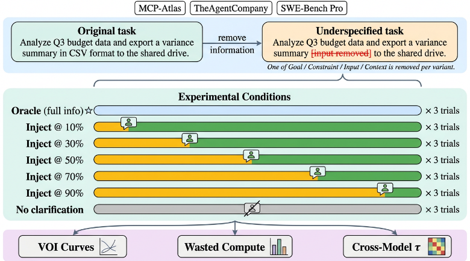
我们通过一个强制注入框架来分离纯粹的时机效应，该框架在受控的轨迹点上提供真值澄清，而不依赖于 Agent 自身检测歧义的能力；实验涵盖 84 个欠规约任务变体、三个基准测试和四个前沿模型（图 1）。我们的实验得出了两项发现，它们挑战了关于澄清时机的常见假设。首先，澄清的价值并非简单的“越早越好”；它强烈依赖于缺失信息的类型：目标澄清在执行进度超过 10% 后几乎丧失全部价值，而输入澄清直到约 50% 时仍保有价值。其次，尽管存在这种结构，目前没有任何前沿模型会在任何维度的经验最优窗口内自然地提问，其策略从过度提问（占 52% 的会话）到从不提问不等。
我们的贡献如下：
2 Related Work
已有工作探讨了澄清是否有帮助、信息在理论上何时具有价值，以及 Agent 应如何决定提问。我们指出了一个共同的盲点：没有任何工作将澄清时机作为自变量加以变化。
2.1 Clarification in Agent Benchmarks
越来越多的工作证实，规格不足（underspecification）会降低 Agent 性能，而澄清渠道能够实现部分恢复。LHAW [Pu et al., 2026] 在四个信息维度上构建了 285 个规格不足的任务变体，并表明各模型呈现出差异极大的澄清策略。HiL-Bench [Elfeki et al., 2026] 对此形成补充，对过度提问与遗漏升级均施加惩罚。较短时程的基准测试（benchmark）研究了相关现象：QuestBench [Li et al., 2025]、AmbigQA [Min et al., 2020]、ClariQ [Aliannejadi et al., 2020]、UserBench [Qian et al., 2025] 以及 τ-bench [Yao et al., 2024]。Tamkin et al. [Tamkin et al., 2023] 表明任务歧义会系统性地降低模型行为表现，Kadavath et al. [Kadavath et al., 2022] 则证实大语言模型（LLM）对不确定性的自我评估能力有限。若干方法旨在弥合这一差距：基于置信度的选择性澄清 [Kuhn et al., 2023]、不确定性感知规划 [Hu et al., 2024]、执行前的主动提问 [Zhang et al., 2024]，以及基于仿真的“提问或回答”训练 [Wu et al., 2025]。在强化学习中，求助策略 [Clouse, 1996] 与 DAgger [Ross et al., 2011] 会在不确定性下向专家查询，Plaut et al. [Plaut et al., 2025] 证明 Agent 必须以线性速率进行查询，否则将面临灾难性后果；近期的 LLM 系统则通过反事实训练 [Liu et al., 2025]、过程奖励模型 [Min et al., 2025] 或交互式反馈 [Pan et al., 2025] 来学习是否提问。上述方法均在优化某个置信度阈值，但都假设信息在轨迹的任意时点同等有用。更广泛的长时程 Agent 基准测试 [Zhou et al., 2024, Trivedi et al., 2024, Liu et al., 2024, Xie et al., 2024, Mialon et al., 2023] 同样没有对澄清时机加以变化。
2.2 Theoretical Foundations Predict Timing Should Matter
在轨迹中途寻求澄清的决策是信息价值（value-of-information, VOI）问题 [Lindley, 1956, Howard, 1966] 的一个特例：Agent 是否应当付出代价（中断、延迟）以在行动之前降低不确定性？Russell 和 Wefald [Russell and Wefald, 1991] 将其形式化为元推理（metareasoning），而主动学习（active learning）范式 [Settles, 2009] 则研究何时查询 oracle 以最大化学习效率。在人机交互（HCI）领域，Adamczyk 和 Bailey [Adamczyk and Bailey, 2004] 证明任务结果取决于中断发生的时机，Mark 等人 [Mark et al., 2008] 则量化了时机不当的中断所带来的恢复成本。近期工作将这些思想落地应用于 LLM Agent：Rao 和 Daumé [Rao and Daumé III, 2018] 应用完全信息期望价值（expected value of perfect information）来对澄清问题进行排序；Dong 等人 [Dong et al., 2026] 提出了一个决策论框架；Kobalczyk 等人 [Kobalczyk et al., 2025] 将澄清建模为贝叶斯实验设计；Suri 等人 [Suri et al., 2025] 将结构化不确定性用于工具调用型 Agent；Lumer 等人 [Lumer et al., 2025a] 优化了多轮工具交互中的短期记忆管理；而 PRISM [Fu et al., 2026] 则学习了一个用于主动干预的成本敏感门控。这些框架都预测澄清的价值应当取决于时机，但没有任何一个提供了我们的强制注入实验所产生的实证测量结果。
3 Hypotheses: Trajectory Commitment
我们构建了一个简单的模型，用以预测澄清时机为何会与信息维度产生交互作用。一个任务由参数向量 θ = ( θ goal , θ input , θ con , θ ctx ) 指定，每个维度对应一个分量。Agent 观察到一个欠指定的版本 ˜ θ ，其中一个分量 θ d 缺失，并执行一条轨迹 τ = ( a 1 , . . . , a T ) 。在注入时刻 t ，Agent 获得 θ d 的真实值。我们将承诺度 C d ( t ) ∈ [0 , 1] 定义为动作 a 1 , . . . , a t 中在因果上依赖于维度 d 的比例。时刻 t 处澄清的价值受可恢复部分的约束：
因为已承诺的动作无法撤销。因此，C d ( t ) 的形状为每个维度的时机衰减曲线设定了上界；若调和成本超过可恢复部分，实际的信息价值（VOI）可能衰减得更快。我们认为，由于典型工作流的因果结构，C d ( t ) 会以不同的速率增长：目标与上下文制约着所有后续动作：早期的方法选择会级联影响整条轨迹，预示着凹形的前置承诺。输入仅影响依赖数据的步骤；Agent 可以通过探索部分地推断输入，预示着近似线性的承诺。约束所施加的规则在被违反之前可能不可见；在不知晓约束的情况下采取的动作可能与其产生主动冲突，因此延迟注入可能具有破坏性，其调和成本会超过该信息的价值。
3
| Benchmark | Variants | Dimensions | Action Budget | Total Runs |
|---|---|---|---|---|
| MCP-Atlas | 36 | goal, constraint, input, context | 6-20 | 3,024 |
| TheAgentCompany | 30 | goal, constraint, input | 6-49 | 1,890 |
| SWE-Bench Pro | 18 | goal, constraint, input, context | 1-121 | 1,134 |
| Benchmark | Variants | Dimensions | Action Budget | Total Runs |
| Model | API Identifier | Provider | Archetype |
|---|---|---|---|
| GPT-5.2 Claude Sonnet 4.5 Gemini 3 Flash DeepSeek V3.2 | gpt-5.2-2025-12-11 claude-sonnet-4-5 gemini-3-flash-preview deepseek-v3-2 | OpenAI Anthropic Google DeepSeek | Over-clarifier (52%) Balanced (23%) Under-clarifier (0%) N/A (MCP-Atlas only) |
| Model | API Identifier | Provider | Archetype |
这些预测引出了两个可证伪的假设。H1（维度相关的时机）：目标与上下文的澄清是前置的（VOI 陡峭衰减），而输入的澄清则逐渐衰减。H2（约束衰减）：在存在 oracle 差距的基准测试（benchmark）上，约束澄清所产生的 VOI 随延迟而下降，调和成本会抵消部分但非全部的信息价值。我们在第 5 节中对这两个假设进行检验。
4.1 Overview and Hypotheses
我们检验由轨迹承诺模型（trajectory commitment model，第 3 节）导出的假设：H1 预测目标与上下文的澄清是前置的，而输入的澄清则逐渐衰减；H2 预测在存在 oracle 差距的基准测试上，约束澄清所产生的 VOI 随延迟而下降，调和成本会抵消部分但非全部的信息价值。此外，我们还检验对于每个维度是否存在一个不归点（point of no return），超过该点后，澄清相对于无澄清基线不再带来改进。
对于 84 个欠规范任务变体中的每一个（完整细分见附录 A.10），我们在可用模型上运行七种条件，每种条件进行三次试验（MCP-Atlas 上四个模型，TheAgentCompany 和 SWE-Bench Pro 上三个模型），从而在所有条件、模型和试验上共计产生超过 6,000 次实验运行（附录 A.8）。这七种条件分别是：（1）oracle，其中 Agent 接收完整规范的原始提示词（上界）；（2）no-clarification，其中 Agent 接收欠规范的提示词，必须在没有额外信息的情况下完成任务（下界）；以及（3-7）五种注入条件，分别位于轨迹的 10%、30%、50%、70% 和 90% 处，其中缺失的信息在执行中途提供。
4.2 Benchmarks and Models
我们的 84 个变体取自 LHAW [Pu et al., 2026] 欠规范任务的一个分层子集，横跨三个覆盖不同 Agent 领域的基准测试（benchmark）（表 1）：
![Figure 2: Natural ask protocol. Three models each run 100 sessions on underspecified TheAgentCompany tasks with the ask_user tool enabled. We report two distinct percentages: the ask rate (fraction of sessions in which the model asked at least once) and the mean ask timing (how far through the trajectory the first ask occurred, as a percentage of total actions). GPT-5.2 asks frequently (ask rate 52%, mean timing 43%), Claude Sonnet 4.5 asks selectively (ask rate 23%, mean timing 50%), and Gemini 3 Flash never asks (ask rate 0%).](assets/a350/figures/fig_2.png)
MCP-Atlas [Bandi et al., 2026, Lumer et al., 2025b,c]（36 个变体，4 个模型）在真实的 MCP 服务器上评估工具调用能力，轨迹较短（6-20 个动作）。四个信息维度全部有所体现。这是唯一一个评估包括 DeepSeek V3.2 在内全部四个模型的 benchmark，因为其标准的工具调用 API 无需特定于该 benchmark 的测试框架（harness）。
TheAgentCompany [Xu et al., 2024]（30 个变体，3 个模型）在一个模拟的企业平台上测试企业工作流，轨迹较长（6-49 个动作），涉及网页、数据库和工具交互。涵盖三个维度（goal、constraint、input）。由于测试框架集成方面的限制，DeepSeek V3.2 被排除在外。
SWE-Bench Pro [Scale AI, 2025]（18 个变体，3 个模型）基于真实的 GitHub issue 评估代码修复任务（1-121 个动作）。DeepSeek V3.2 被排除；其余三个模型均同时具有注入数据和基线数据，从而使每个注入单元格根据维度的不同包含 n = 12-31 个（变体，模型）单元（附录 A.7）。
LHAW 定义了四个信息维度：goal（交付物不明确）、constraint（缺失规则或阈值）、input（未指明数据来源）和 context（缺失领域知识）。变体按维度和歧义类别进行分层：结果关键型（outcome-critical，缺失信息导致失败）、发散型（divergent，输出有效但非预期）和良性（benign，尽管存在信息缺口，Agent 仍能成功）。
4.3 Forced Injection Protocol
由于任务的动作数从 6 到 121 不等，我们按模型和任务对注入点进行校准。对于模型 m 和变体 v，令 B m,v 表示平均 oracle 轨迹长度（四舍五入至最接近的整数）。时机 t ∈ {0.1, 0.3, 0.5, 0.7, 0.9} 对应的注入动作为 a inject = max(1, ⌊B m,v · t⌋)。对于 B m,v = 1 的 SWE-Bench Pro 任务，五个注入条件全部坍缩为动作 1；我们保留这些任务以维持样本量，但其对时机方差的贡献为零。
在动作 a inject 处，一条包含真实（ground-truth）removed_segments 的合成用户消息会在下一个干净的轮次边界处插入（附录 A.11、A.12）。ask_user 工具被禁用，因此澄清只能通过注入到达。这些消息读起来自然（例如：“顺便说一下，我本应提到：目标格式是 CSV，而不是 JSON。”）。每个动作对应一次工具调用或一个 Agent 消息轮次。
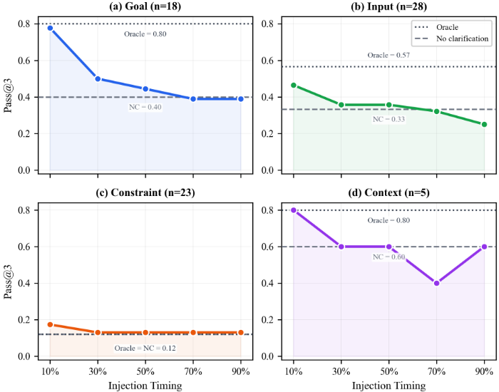
4.4 Natural Ask Protocol
4.5 Metrics
我们采用四个互补的指标进行评估：
Pass@3。遵循 HumanEval 的公式化定义 [Chen et al., 2021]，我们对每个 (variant, model, condition) 单元格计算 k = 3 次尝试中至少一次成功的概率。我们报告每个实验组内各单元上 pass@3 的均值。
浪费的计算量（Wasted compute）。对于注入条件，我们统计其效果未出现在 oracle（完全指定）轨迹中的注入前动作数量，并以注入前动作总数进行归一化。该指标量化了因延迟澄清而变得无用的早期工作所占的比例。
未出现在 oracle 轨迹中的动作仍可能间接有用（例如，帮助 agent 形成理解的探索性 schema 查询）。因此，我们将该指标视为浪费程度的保守上界，适用于量化延迟澄清的成本上限，而非断言每一个
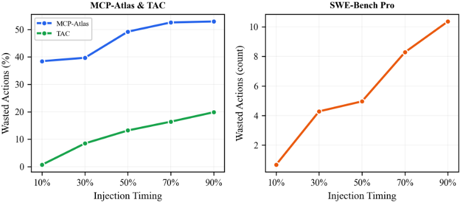
| Claude | Gemini | GPT | Claude | DeepSeek | Gemini | GPT | ||
|---|---|---|---|---|---|---|---|---|
| Claude Gemini GPT | 1 | 0.87 | 0.82 | Claude | 1 | 0.45 | 0.67 | 0.43 |
| 0.78 | DeepSeek | 0.45 | 1 | 0.47 | 0.34 | |||
| 0.87 | 1 | Gemini | 0.67 | 0.47 | 1 | 0.39 | ||
| 0.82 | 0.78 | 1 | GPT | 0.43 | 0.34 | 0.39 | 1 |
| | Claude | Gemini | GPT | | Claude | DeepSeek | Gemini | GPT |
(a) TheAgentCompany
(b) 所有基准测试合并
非 oracle 动作都毫无价值。定性分析（附录 A.6）证实，某些“浪费的”探索部分弥补了规格说明的缺失，这与输入的信息价值（VOI）逐渐下降相一致。
不归点（Point of no return）。pass@3 显著超过无澄清基线（单侧置换检验，p < 0.05）的最晚注入时机，按维度和歧义类别进行分层。
跨模型一致性（Cross-model consistency）。跨模型对计算各 variant 的 pass@3 向量之间的 Kendall's τ 秩相关 [Kendall, 1938]，用于衡量时机效应是任务固有的还是模型依赖的。
5.1 VOI Curves Are Dimension-Dependent (H1)
图 3 展示了 MCP-Atlas 上的信息价值（VOI）曲线，该基准测试（benchmark）具有最强的时机信号（每个维度 n =5-28 个单元；各 benchmark 的完整数值见附录表 4）。澄清时机与信息维度之间存在强烈的交互作用，部分证实了 H1（目标前置加载预测在 MCP-Atlas 上得到有力支持；上下文预测在方向上一致，但在两个 benchmark 上 n =17 的样本量下统计功效不足）：
目标（Goal）。表现出戏剧性的前置加载。在轨迹的 10% 处注入即可恢复接近 oracle 的性能（pass@3 为 0.78，oracle 为 0.80，NC 为 0.40）。收益急剧衰减：Inj-30 = 0.50（高于 NC），Inj-50 = 0.44（高于 NC），Inj-70 = 0.39（≈ NC），Inj-90 = 0.39。到轨迹的 70% 处，目标注入相对无澄清不再有改进。这证实了目标信息具有一个狭窄的早期高价值窗口。
7
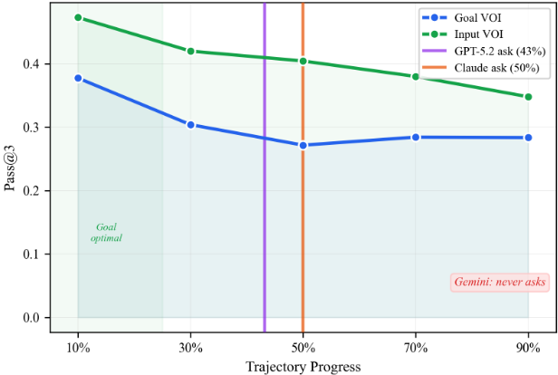
输入（Input）。呈逐渐下降趋势（Inj-10 时为 0.46，Inj-30 和 Inj-50 时为 0.36，Inj-70 时为 0.32，Inj-90 时为 0.25；NC = 0.33，oracle = 0.57）。早期窗口（Inj-10 至 Inj-50）可恢复大部分 oracle 差距，但到 Inj-70 时输入澄清降至 NC 基线水平，到 Inj-90 时则远低于该基线。相对于目标而言更平缓的斜率证实，输入信息可在比目标信息更长的时间内保持可恢复性，这与智能体通过环境探索进行部分补偿的情况一致，但这一恢复窗口仅延续到轨迹的大约 50% 处。
约束（Constraint）。约束的行为取决于是否存在 oracle 差距。在 MCP-Atlas 上，Oracle 与 NC 完全相同（均为 0.12），因此该 benchmark 对 H2 而言不具信息量（不存在可供衰减的信息价值），且平坦的注入曲线（各时机为 0.13-0.17）与 H2 和零假设均相容。在 SWE-Bench Pro 上，oracle 差距相当大（0.81 对 NC 的 0.56），约束注入表现出真实的收益递减（Inj-10 时为 0.81，至 Inj-90 时降至 0.68；附录表 4），这支持 H2 的较弱形式：调和成本使约束的 VOI 相对 oracle 有所降低，但注入的约束信息在所有测试时机上仍高于无澄清基线（0.68 > 0.56）。H2 的强形式（低于基线的干扰）未得到任一 benchmark 的支持。约束类澄清最好在执行开始之前提供，而非在轨迹中途提供。
上下文（Context）。证据来自两个 variant 多样性有限的 benchmark：MCP-Atlas（n =5）显示出强烈的早期注入收益（10% 时为 0.80，而 NC 为 0.60），而 SWE-Bench Pro（n =12）在各时机上基本持平（大多数注入点为 0.92，其中 Oracle = 0.67，NC = 0.75；NC > Oracle 的倒置反映了抽样变异性；参见附录 A.7）。合并样本（n =17）的规模过小，无法就上下文的时机结构得出可靠结论，不过 MCP-Atlas 上的信号与 H1 的前置加载预测一致。
跨基准测试模式（Cross-benchmark patterns）。在 TheAgentCompany 上，地板效应（oracle ≤ 29%）削弱了时机信号。目标注入（Goal injection）各条件与 NC（0.12）的差距均在 4 个百分点以内，这与 n = 65 下的抽样波动相一致，而非注入导致的干扰。Input 在中间时机表现出轻微收益（0.21-0.25 对比 NC 的 0.19）。Constraint 处于地板水平（所有条件下均为 0%）。SWE-Bench Pro 的结果（附录 A.1；注意事项见 A.7）在方向上一致。汇总曲线见附录 A.9。
不归点（Point of no return）。我们发现澄清收益是连续的而非基于阈值的：只有结果关键型（outcome-critical）variant 表现出统计显著的恢复点，位于轨迹的 30% 处（p < 0.05；附录 A.5）。越早总是越好，但并不存在一个明确的截止点，使得澄清在超过该点后变得无用。
5.2 Wasted Compute
浪费的计算量（即注入前动作中未出现在 oracle 轨迹中的比例，是被丢弃工作量的上界）在全部三个基准测试中均随注入延迟稳步增加（图 4；附录 A.3）。在 TheAgentCompany 上，浪费比例从 Inj-10 时的 0.0% 上升到 Inj-90 时的 21.7%。在 MCPAtlas 上，该比例介于 38.4% 至 52.9% 之间（较高的基线反映了其轨迹更短）。SWE-Bench Pro 证实了这一模式：被浪费的动作数为 0.7 至 10.4 个。
5.3 Cross-Model Consistency
表 3 报告了各模型对之间的 Kendall's τ 秩相关系数。在 TheAgentCompany 上（3 个模型，均衡的变体集合），相关系数介于 0.78 至 0.87 之间，表明各模型在哪些变体能从早期澄清中获益这一问题上高度一致。在涵盖所有基准测试的合并数据集上（4 个前沿模型），Claude-Gemini 达到 τ = 0 . 67，且所有模型对均超过 0.34（所有模型对的 p < 0 . 01；见附录 A.4）。这些结果支持如下解释：时机效应主要是任务内在的——无论由哪个模型执行，相同的变体都能从早期注入中获益。
5.4 Natural Ask Overlay
我们对 300 个 TheAgentCompany 会话的自然提问分析揭示了模型澄清行为上的显著差异（附录 A.2 提供了各模型的统计数据与时机分布）。GPT-5.2 在 52% 的会话中提问，首次提问时机平均位于轨迹的 43% 处。Claude Sonnet 4.5 在 23% 的会话中提问，平均时机为 50%。Gemini 3 Flash 从不提问（在全部 100 个会话中提问率为 0%）。这些典型模式与 LHAW 在不同协议下独立得出的发现相一致，即 GPT-5.2 存在过度澄清且单问题效率最低，而 Gemini 模型则澄清不足 [Pu et al., 2026]。
将这些自然提问时机叠加到强制注入的 VOI 曲线上，可以揭示时机对齐方面的差距（图 5）。GPT-5.2 在 43% 处的提问已越过目标最优值（10%），但仍处于输入窗口之内；Claude 的 50% 对目标而言并非最优，但对输入而言尚属合理；Gemini 则放弃了全部收益。值得注意的是，仅凭时机对齐并不能预测成功：尽管 Claude 提问更晚且更少，其单会话成功率（11%）却高于 GPT-5.2（3%）（附录 A.2），这表明问题质量可能比提问频率更为重要；不过，这一模型间比较无法将问题质量与其他模型层面的差异分离开来，因此我们将其视为一个假设，而非受控发现。
6 Limitations
本研究确立了澄清时机的需求侧（在每个轨迹点上接收信息能为任务性能带来多大收益？），但并未涉及供给侧：让 Agent 识别歧义并在恰当的时机提问。在这些 VOI 曲线的基础上构建供给侧机制是重要的下一步工作。最强的时机信号来自 MCP-Atlas（每个维度 n =5 -28）；TheAgentCompany 因地板效应而提供的信号较弱，而 SWE-Bench Pro 的每个单元格样本量适中（n =12 -31）。自然提问协议仅覆盖 TheAgentCompany（300 个会话）。两种协议之间存在行为层面的混淆因素：强制注入会禁用 ask_user，而自然提问则启用 ask_user，因此当 Agent 知道自己无法提问时，其规划方式可能有所不同；强制注入下的 VOI 曲线应被解读为信息价值的上限。
7 Conclusion
我们首次给出了长时程 Agent 工作流中澄清时机的经验性 VOI 曲线。时机效应强烈依赖于维度：目标澄清集中于前期（≤ 10% 窗口），输入澄清逐渐衰减（在约 50% 之前仍可恢复），而约束澄清的收益取决于 oracle 差距；跨模型一致性证实这些特征是任务内在的。目前没有任何前沿模型能在最优窗口内提问。这些发现带来了两条可操作的准则：（1）Agent 应在前几个动作内验证目标；（2）输入类提问可以稍晚一些提出，但应在轨迹的前半段内提出。更广泛地说，强制注入方法可推广到任何任务规格不完整的 Agent 基准测试，并为现有理论框架 [Howard, 1966, Dong et al., 2026, Kobalczyk et al., 2025] 提供了它们所需但一直缺失的经验需求曲线。在这些曲线之上构建时机感知的澄清策略 [Sen et al., 2026] 是一个自然的下一步。
9
A.1 Per-Benchmark VOI Curves
表 4 给出了所有（基准测试、维度、条件）组合单元格的完整 pass@3 值。图 6-8 将这些结果可视化为各基准测试的信息价值（VOI）曲线。
| Benchmark | Dimension | Oracle | Inj-10 | Inj-30 | Inj-50 | Inj-70 | Inj-90 | NC |
|---|---|---|---|---|---|---|---|---|
| MCP-Atlas | Goal ( n =18 ) | 0.8 | 0.78 | 0.5 | 0.44 | 0.39 | 0.39 | 0.4 |
| MCP-Atlas | Constraint ( n =23 ) | 0.12 | 0.17 | 0.13 | 0.13 | 0.13 | 0.13 | 0.12 |
| MCP-Atlas | Input ( n =28 ) | 0.57 | 0.46 | 0.36 | 0.36 | 0.32 | 0.25 | 0.33 |
| MCP-Atlas | Context ( n =5 ) | 0.8 | 0.8 | 0.6 | 0.6 | 0.4 | 0.6 | 0.6 |
| TAC | Goal ( n =65 ) | 0.2 | 0.11 | 0.08 | 0.1 | 0.08 | 0.12 | 0.12 |
| TAC | Constraint ( n =15 ) | 0 | 0 | 0 | 0 | 0 | 0 | 0 |
| TAC | Input ( n =50 ) | 0.29 | 0.23 | 0.21 | 0.25 | 0.21 | 0.21 | 0.19 |
| SWE-Bench Pro | Goal ( n =21 ) | 0.83 | 0.86 | 0.81 | 0.67 | 0.81 | 0.71 | 0.46 |
| SWE-Bench Pro | Constraint ( n =31 ) | 0.81 | 0.81 | 0.74 | 0.74 | 0.74 | 0.68 | 0.56 |
| SWE-Bench Pro | Input ( n =24 ) | 0.83 | 1 | 0.92 | 0.79 | 0.79 | 0.75 | 0.63 |
| SWE-Bench Pro | Context ( n =12 ) | 0.67 | 0.92 | 0.92 | 0.67 | 0.92 | 0.92 | 0.75 |
| Benchmark | Dimension | Oracle | Inj-10 | Inj-30 | Inj-50 | Inj-70 | Inj-90 | NC |
MCP-Atlas — 按维度划分的 VOI
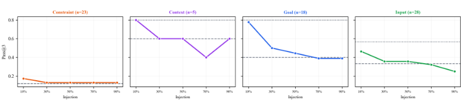
各基准测试的针对性解读。这三个基准测试代表了一系列任务特性，正是这些特性解释了它们各自不同的 VOI 模式：
13
TheAgentCompany — VOI by Dimension
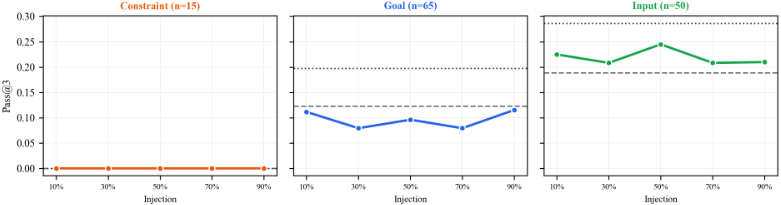
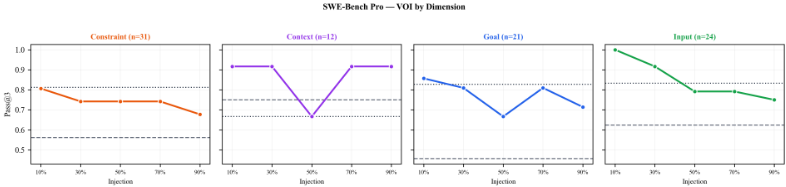
A.2 Natural Ask Timing Details
The 300 natural-ask sessions span seven TheAgentCompany base tasks. Table 5 summarizes permodel ask behavior.
GPT-5.2 averages 1.71 ask calls per asking session (max 5), indicating a pattern of iterative clarification. Claude always asks exactly once when it asks at all, suggesting a more deliberate single-query strategy. The distribution of first-ask timings is concentrated: 72% of all first-ask events occur between 25% and 50% of the trajectory.
Qualitative analysis of ask content. GPT-5.2's questions tend to be specific and actionable (e.g., 'Should I use the FY25 Q1 data or the calendar year Q1?'), while Claude's questions are broader (e.g., 'Could you clarify what format you'd like the output in?'). Despite asking far more often, GPT-5.2
14
| Model | Ask Rate | Total Calls | Mean Timing | Median Timing |
|---|---|---|---|---|
| GPT-5.2 | 52% | 89 | 43% | 50% |
| Claude Sonnet 4.5 | 23% | 23 | 50% | 50% |
| Gemini 3 Flash | 0% | 0 | - | - |
| Model | Ask Rate | Total Calls | Mean Timing | Median Timing |
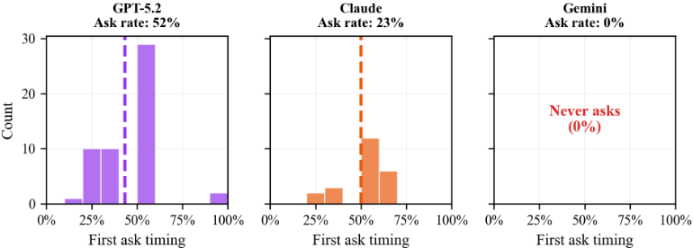
achieves substantially lower per-session success (3%) than Claude (11%), indicating that asking frequency does not predict task success. Claude's selective single-question strategy outperforms GPT-5.2's iterative approach, suggesting that question quality and selectivity may matter more than volume, though we cannot isolate this from other model-level differences. This is consistent with the VOI framework: later and repeated questions yield diminishing returns, and poorly targeted questions may provide no actionable benefit even when asked at an appropriate trajectory point.
A.3 Wasted Compute by Benchmark
表 6 报告了按基准测试（benchmark）和注入时机统计的平均浪费算力占比。在 TheAgentCompany 上，浪费算力呈现出清晰的线性模式，反映出在较长的轨迹中浪费会逐渐累积。在 MCP-Atlas 上，较高的基线（即使在 injection-10 时也达到 38%）反映出其轨迹较短，即使是单个早期动作走上错误路径，相对于 oracle 轨迹也会被计为浪费。
| Benchmark | Inj-10 | Inj-30 | Inj-50 | Inj-70 | Inj-90 |
|---|---|---|---|---|---|
| TheAgentCompany (%) | 0 | 9.6 | 13.7 | 17.6 | 21.7 |
| MCP-Atlas (%) | 38.4 | 39.7 | 49.2 | 52.6 | 52.9 |
| SWE-Bench Pro (actions) | 0.7 | 4.3 | 5 | 8.3 | 10.4 |
| Benchmark | Inj-10 | Inj-30 | Inj-50 | Inj-70 | Inj-90 |
MCP-Atlas 上初始浪费较高（injection-10 时为 38%）并在 53% 处趋于平稳的模式，反映了短工具调用轨迹的一种结构性特征：即使是早期注入，也需要 agent 重新开始其处理方法，而前 1-2 个动作往往已经确定下来。相比之下，TheAgentCompany 从 0% 开始的线性增长反映出，企业工作流中的前几个动作（打开浏览器、导航到某个页面）通常与方法无关，无论最终的澄清如何都不会被浪费。
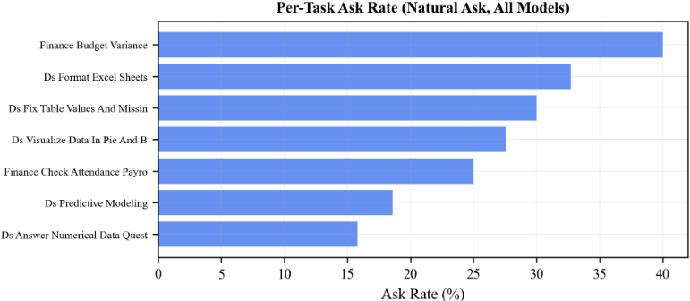
A.4 Cross-Model Correlation Details
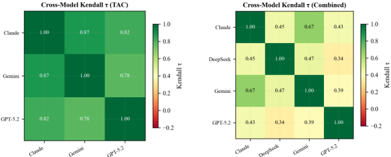
表 7 报告了所有模型对之间相关性的 p 值。对于合并数据集，所有 4 个模型对均在 p < 0.01 的水平上达到显著。对于仅 TAC 的分析，所有模型对均在 p < 10^-5 的水平上显著，这反映了可比较的变体-时机组合数量更多（每个模型在 5 种注入条件下运行全部 30 个 TAC 变体）。
与合并数据集（0.34-0.67）相比，TAC 上更高的相关性（0.78-0.87）可能反映了两个因素：（1）TAC 子集在所有三个模型上使用了完全相同的变体集合和注入协议（确保了同口径的比较）；（2）合并数据集包含采用 4 个模型的 MCP-Atlas（引入了仅在该基准测试上可用的 DeepSeek）以及 SWE-Bench Pro——后者的整体通过率较高，压缩了 VOI 的取值范围，从而削弱了秩相关性。
A.5 Point of No Return Analysis
表 8 报告了不可返回点分析。我们将“最晚有效注入点”定义为 pass@3 显著超过无澄清基线的最晚时机（单侧
16
| Claude | Gemini | GPT | Claude | DeepSeek | Gemini | GPT | |
|---|---|---|---|---|---|---|---|
| Claude Gemini GPT | - | < 10 - 9 - | < 10 - 4 < 10 - 3 - Claude DeepSeek Gemini GPT | - | < 10 - 3 - | < 10 - 9 < 10 - 3 - | < 10 - 4 < 0 . 01 < 10 - 3 - |
| Claude | | Gemini | GPT | Claude | DeepSeek | Gemini | GPT |
(a) TAC p 值
(b) 合并 p 值
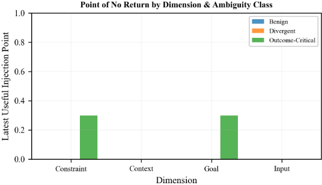
置换检验，10,000 次置换，p < 0.05，并对每个单元格的 5 次时机比较进行 Bonferroni 校正）。
| Dimension | Outcome-Critical | Divergent | Benign |
|---|---|---|---|
| Goal | 30% | - | - |
| Constraint | 30% | - | - |
| Input | - | - | - |
| Context | - | - | - |
| Dimension | Outcome-Critical | Divergent | Benign |
输入与上下文维度缺乏显著点，这与 VOI 曲线相一致：输入呈渐进式下降（从未急剧穿越基线），而上下文的样本过少（n = 5），统计功效不足。对于目标与约束维度，30% 的截断点与承诺模型的预测相符，即这两个维度具有陡峭的早期承诺率。
A.6 Qualitative Trajectory Analysis
为说明时机如何与 Agent 行为相互作用，我们针对每个维度给出代表性的轨迹模式：
目标（MCP-Atlas，早期注入有帮助）。一项任务要求以“适合电子表格分析的格式”导出数据。在没有澄清的情况下，三个模型都默认输出 JSON。在 10% 处注入目标澄清（“用户想要 CSV 格式”）后，Agent 从一开始就正确输出 CSV。在 50% 处，三个模型中有两个已经承诺采用 JSON 解析流水线，必须丢弃 3-5 个动作才能重新开始。在 90% 处，所有模型都已用错误的格式完成了任务。
17
输入（MCP-Atlas，渐进式下降）。一项任务要求查询“客户数据库”，但未指明哪张表包含客户记录。在没有澄清的情况下，Agent 会探索 schema（列出表、检查列），最终通过反复试错找到正确的表。相对于 oracle 轨迹而言，这种探索是“浪费”的，但在信息获取上是富有成效的，因为它缩小了搜索空间。早期注入可以消除这种探索；晚期注入仍能让 Agent 避免在最后一步查询错误的表。
约束（TAC，破坏性注入）。一项任务要求生成预算报告，但遗漏了“所有数字必须以千为单位”。在没有该约束的情况下，Agent 会以原始单位生成正确的报告。当该约束在 50% 处注入时，Agent 会尝试追溯性地缩放已有输出，有时会引入舍入误差或格式不一致，导致检查点分数低于无约束基线。
A.7 SWE-Bench Pro Limitations
除第 6 节中指出的注意事项外，SWE-Bench Pro 的结果还需要额外的警示：
此外，多个 SWE-Bench Pro 单元格的数值高于 Oracle 基线：Goal Inj-10（0.86 对比 Oracle 0.83）、Input Inj-10（1.00 对比 0.83）、Input Inj-30（0.92 对比 0.83）、Context Inj-10（0.92 对比 0.67）以及 Context NC（0.75 对比 0.67）。在每格样本量为 n = 12-31 的情况下，这些反转与抽样变异性相符。另一个促成因素是，注入消息提供了显式、结构化的指导（例如“目标格式为 CSV”），这可能比嵌入在原始任务提示中的相同信息更加醒目；这是强制注入协议的一个已知伪影。这些差异均不具有统计显著性。我们仍将 Oracle 保留为概念上的上界，同时指出小样本噪声可能造成局部性的反转。
尽管存在这些局限，SWE-Bench Pro 仍为整体图景做出了贡献：它证实了代码生成任务表现出陡峭的承诺率（与 MCP-Atlas 上目标维度的模式一致），并且 oracle 信息能显著提升性能（在三个模型上，目标、约束和输入维度的 oracle 结果为 0.81-0.83，而无澄清为 0.46-0.63；见表 4）。
A.8 Total Runs and Computational Cost
表 9 总结了实验的总体规模。
| Benchmark | Forced Injection Trials | Natural Ask Sessions | Total Trials |
|---|---|---|---|
| MCP-Atlas | 3,024 | - | 3,024 |
| TheAgentCompany | 1,890 | 300 | 2,190 |
| SWE-Bench Pro | 1,134 | - | 1,134 |
| Total | 6,048 | 300 | 6,348 |
| Benchmark | Forced Injection Trials | Natural Ask Sessions | Total Trials |
A.9 Aggregate VOI Interpretation
图 13 中的聚合曲线汇集了多个基线性能水平差异悬殊的基准测试，并对每个（variant, model）单元赋予同等权重。由于 TAC 以接近下限的基线贡献了大多数目标单元（63%），聚合结果削弱了各基准测试曲线（图 6-8）中可见的更强时机信号。应结合本汇总视图一并查阅各基准测试的细分结果。
18
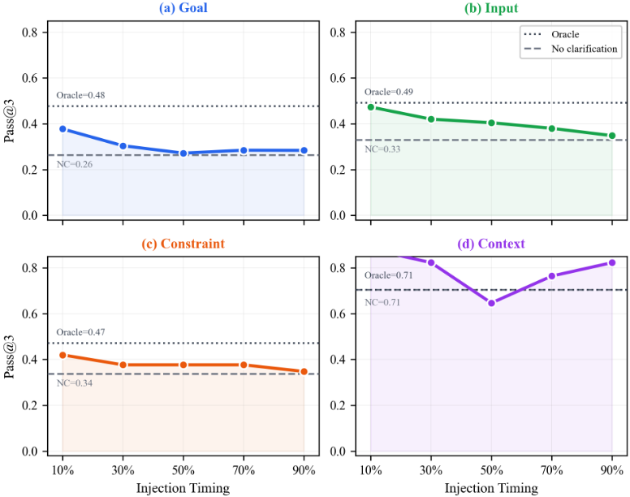
A.10 Dataset Details
表 10 提供了本研究中使用的 84 个任务变体的完整交叉表，按基准测试、信息维度和歧义类别进行细分。该子集取自 LHAW [Pu et al., 2026] 中更大规模的 101 个变体池；为控制计算成本，排除了 17 个 SWE-Bench Pro 变体。选择过程经过分层以保持维度平衡：被排除的变体在维度分布或歧义类别上与保留的变体不存在系统性差异（见第 6 节）。
A.11.1 Injection Message Construction
注入消息由一个模板系统构建而成，该系统将每个（维度，子维度）对映射为自然语言消息模式。表 11 展示了代表性的模板。对于包含多个被移除片段的变体，第一个片段使用完整模板，后续片段则以连接短语（'And {value}.' 或 'Also, {value}.'）附加。
Example injection messages from actual experiments:
19
| Benchmark | Dimension(s) | Outcome-Crit. | Divergent | Benign | Total |
|---|---|---|---|---|---|
| MCP-Atlas | goal | 6 | 1 | 0 | 7 |
| MCP-Atlas | input | 5 | 4 | 0 | 9 |
| MCP-Atlas | constraint | 5 | 4 | 2 | 11 |
| MCP-Atlas | context / context+goal | 0 | 1 | 2 | 3 |
| MCP-Atlas | multi (goal+input, constr.+input, constr.+goal) | 2 | 1 | 3 | 6 |
| TAC | goal | 6 | 2 | 3 | 11 |
| TAC | input | 2 | 4 | 0 | 6 |
| TAC | constraint / constr.+goal | 2 | 0 | 1 | 3 |
| TAC | multi (goal+input, constr.+input) | 4 | 5 | 1 | 10 |
| SWE-Bench Pro | goal+input / input | 1 | 2 | 2 | 5 |
| SWE-Bench Pro | constraint / constr.+goal | 2 | 2 | 2 | 6 |
| SWE-Bench Pro | context / context+goal | 0 | 1 | 2 | 3 |
| SWE-Bench Pro | constr.+input / constr.+context | 2 | 1 | 1 | 4 |
| Total | Total | 37 | 28 | 19 | 84 |
| Benchmark | Dimension(s) | Outcome-Crit. | Divergent | Benign | Total |
| Dimension | Subdimension | Template |
|---|---|---|
| goal goal input input constraint constraint context context | target format source location temporal selection background domain knowledge | 'By the way, I should clarify: I'm specifically looking for {value}.' 'By the way, please give me the result in {value}.' 'By the way, you can find the data in {value}.' 'By the way, it's located at {value}.' 'By the way, I should have mentioned: I'm looking at {value}.' 'I should mention, only include those that are {value}.' 'By the way, for context: {value}.' 'For context, {value}.' |
| (default fallback) | (default fallback) | 'By the way, I should have mentioned: {value}.' |
| Dimension | Subdimension | Template |
A.11.2 ask_user Tool Definition
在 natural-ask 实验中，ask_user 工具以如下 schema（OpenAI 函数调用格式）提供给模型：
{ "name": "ask_user", "description": "Ask the user a clarifying question to get more information about the task. Use this when the task is ambiguous or you need specific details to proceed.", "parameters": { "properties": { "question": {"type": "string", "description": "The clarifying question to ask."}, "context": {"type": "string", "description": "Optional additional context.", "default": ""} }, "required": ["question"]
} } 此外，任务提示被扩展，加入了以下内容：
重要提示：你的输出将由自动评分器（auto-grader）检查，该评分器寻找的是精确答案。此任务可能缺失关键信息。请使用 ask_user 工具向用户询问任何缺失的细节。
当模型调用 ask_user 时，一个模拟用户会以真值（ground-truth）的 removed_segments 内容进行响应，该内容与 forced-injection 条件下所使用的注入消息相匹配。
A.11.3 Oracle Budget Calibration
注入时机是相对于为每个（模型 m，变体 v）组合定义的、经 oracle 校准的动作预算 B m,v 来确定的。该预算取 3 次 oracle 条件试验中轨迹长度的均值，并四舍五入至最接近的整数：
时序比例 f ∈ {0.1, 0.3, 0.5, 0.7, 0.9} 对应的注入动作为：
预算范围反映了任务的多样性：MCP-Atlas 任务较短（6-20 个动作），TheAgentCompany 任务适中（6-49 个动作），而 SWE-Bench Pro 任务可能需要较长的代码导航与编辑（1-121 个动作）。
A.11.4 Reproducibility Parameters
所有模型均以 temperature = 0.0（贪心解码）进行查询，每轮最大输出长度为 4,096 个 token。每个（variant, model, condition）单元格的三次试验，对任何具有随机性的 API 参数均使用固定随机种子（0, 1, 2）。6,348 次实验运行在所有提供商处的 API 总成本约为 4,200 美元。任务成功与否由 LHAW 自动评分器 [Pu et al., 2026] 判定，该评分器根据基准测试（benchmark）的不同，使用精确匹配或基于评分细则（rubric）的准则，将智能体输出与标准答案进行比较（MCP-Atlas：工具输出匹配；TheAgentCompany：检查点评分；SWE-Bench Pro：测试套件通过）。
A.12 Example Trajectory
表 12 展示了单次强制注入试验的结构。该 MCP-Atlas 示例（变体 688ba1...::V_S1_delete，GPT-5.2，在 10% 处注入）展示了一个包含 7 个动作的轨迹，注入以用户消息的形式在第 1 步之后到达。
每个试验 JSON 记录了：variant_id、model、condition、injection_point、actions（包含每步的 action_name、parameters、result、is_pre_injection）、conversation（包含注入轮次在内的完整聊天历史）、task_success、total_actions、pre_injection_actions、post_injection_actions 以及 duration_seconds。所有试验数据将随代码一同发布。
21
| Step | Phase | Action | Purpose |
|---|---|---|---|
| 1 | PRE | get_config | Environment setup |
| . . . . . . | . Injection: | 'By the way, I | should have mentioned: |
| I'm looking at first crime I had registered.' . . . . . . . . . . . . | I'm looking at first crime I had registered.' . . . . . . . . . . . . | I'm looking at first crime I had registered.' . . . . . . . . . . . . | I'm looking at first crime I had registered.' . . . . . . . . . . . . |
| 2 | POST | list_directory | Locate data files |
| 3 | POST | start_process | Launch data tool |
| 4 | POST | start_process | Execute query |
| 5 | POST | search_pubmed | Cross-reference |
| 6 | POST | search_pubmed | Refine search |
| 7 | POST | search_pubmed | Extract answer |
| Result: task_success = True, total_actions = 7 | Result: task_success = True, total_actions = 7 | Result: task_success = True, total_actions = 7 | Result: task_success = True, total_actions = 7 |
| Step | Phase | Action | Purpose |
22